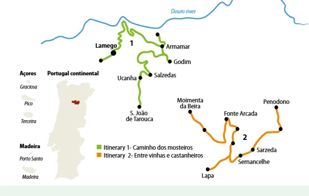

Kapitel 4 · Die portugiesischen Weinregionen
Weinregion Távora-Varosa
Kennzahlen (2022)
Rebfläche: 2.274 ha
Gesamterzeugung: 4.786.900 Liter
Geschichte
Die Region trägt Spuren menschlicher Besiedlung seit vorgeschichtlicher Zeit. Der Rebbau begann während der römischen Besatzung und entwickelte sich im 12. Jahrhundert deutlich. Die Weinerzeugung in dieser Region geht auf das Jahr 1678 zurück, als die Zisterziensermönche damit begannen. Hier errichteten die Zisterzienser einige der schönsten Beispiele ihrer Architektur, etwa das Kloster São João de Tarouca, das erste seiner Art auf der Iberischen Halbinsel, errichtet im siebten Jahrhundert. Bedeutung erlangte die Region jedoch mit der Schaumweinerzeugung. 1919 prägte Aquilino Ribeiro den Begriff „Terras do Demo“ (Land des Teufels), um das Leben und die Mühen des Überlebens in einem Gebiet tief im Inneren Portugals zu beschreiben. 1989 wurde sie als erstes Weinbaugebiet des Landes für die Erzeugung von DOC-Schaumwein abgegrenzt. Die heutige Bezeichnung entstand 1999; sie verweist auf die Flüsse Távora und Varosa, zwei Nebenflüsse des Douro, und ist eine der ersten DOs Portugals speziell für Schaumweine. Die Comissão Vitivinícola Regional Távora-Varosa – CVRTV (Regionale Weinbaukommission Távora-Varosa) ist die

Lamego
zuständige Stelle für die DO- und IG-Erzeugnisse dieser Region.
Terroir
Klima nach Köppen-Geiger:
Csa, subhumides gemäßigtes Klima mit trockenem Sommer. Das Klima dieses Weinbaugebiets teilt sich in zwei orografisch und bodenkundlich unterschiedliche Bereiche.
Indizes des MCC-Systems (Tonietto & Carbonneau, 2004):
Gebiet Tarouca: heliothermischer Index (HI): +1, Kühle-Nacht-Index (CI): −1, Trockenheitsindex (DI): +2;
Moimenta da Beira: heliothermischer Index (HI): +2, Kühle-Nacht-Index (CI): +1, Trockenheitsindex (DI): +1. Im zeitigen Frühjahr besteht hohe Frostgefahr, dazu hohe Luftfeuchtigkeit mit Infektionsgefahr durch Pilzkrankheiten. Die Vegetationsperiode dauert etwa acht Monate, von März bis November. Das Klima ist geprägt von heißen, trockenen Sommern und rauen, nassen Wintern. Im Sommer kann die Höchsttemperatur über 30 °C liegen, und während der Traubenreife können die Temperaturunterschiede 20 °C erreichen. Die Merkmale des Terroirs von Távora-Varosa ergeben frische Weine mit hoher Säure, ideal für Schaumweine. Der mittlere Jahresniederschlag beträgt 700 mm, ungleich über das Jahr verteilt und vor allem im Herbst und Winter.
Geologie und Bodenkunde: Die Region Távora-Varosa liegt am Fuß der Serra da Nave. Die Regionen IG Terras de Cister und Távora-Varosa bilden einen Puffer zwischen Douro und Dão und haben besondere Bodenverhältnisse: überwiegend Granitböden, kalkarm, teils Schiefer und sauer, mit ausgeprägter Erosion und geringer Wasserspeicherfähigkeit. Wie im Douro sind die Klimabedingungen einzigartig. Dieses Land der Kleinbetriebe liegt auf einer gebirgigen Hochebene mit kalten, nassen Wintern und heißen, trockenen Sommern. Es ist eine der Zonen, die Schaumweinen außergewöhnliche Eigenschaften verleihen.
Höhe der Weinberge: etwa 550 Meter.
Erzeugte Weintypen
IG-Wein Terras de Cister bzw. Landwein Terras de Cister:
Weiß, Rot, Rosé, Schaumwein, Qualitätsschaumwein sowie aromatischer Schaumwein in Rot, Weiß und Rosé.
DO-Wein Távora-Varosa: Rot, Weiß, Rosé und Schaumwein. DO-Schaumwein Távora-Varosa (VEQPRD): Rot, Weiß, Rosé.
Regionale Kontakte
Technische Informationen: IVDP, I.P. – Instituto dos Vinhos do Douro e do Porto, I.P. (Hauptsitz), Rua dos Camilos 90, 5050-272 Peso da Régua, Tel.: 254 320 130,

Weinbauregion DOP Porto und Douro
DO Távora-Varosa
Fax: 254 320 149
Website: www.ivdp.pt, E-Mail: ivdp@ivdp.pt
Zwischengeschaltete Zertifizierungsstelle:
Instituto dos Vinhos do Douro e do Porto, I.P. – IVDP (Hauptsitz), Rua dos Camilos 90, 5050-272 Peso da Régua, Tel.: 254 320 130,
Website: www.ivdp.pt, E-Mail: ivdp@ivdp.pt. Comissão Vitivinícola Regional de Távora-Varosa, Casa do Paço – Dalvares, 3610-013 Tarouca, Tel.: 254 679 000/254 679 001, E-Mail: geral@cvrtavora-varosa.pt
Weintourismus:
Weinroute Terras do Cister (ViniPortugal); www.viniportugal.pt; Câmara de Moimenta da Beira: www.if-moimentadabeira.pt; www.douronet.pt. Bezeichnungen für DOP-Schaumwein aus Távora-Varosa (Flaschengärung): a) „Cuvée“ oder „Cuvée Especial“, b) „Millésime“, c) „Assemblage“, d) „Grande Cuvée“ (Grand Cuvée). DOP-Schaumweine müssen das Erntejahr angeben.
Botanik (Biodiversität) und zugelassene Sorten
Rechtsgrundlage: Ministerialerlass Nr. 151/2012 vom 18. Mai und Gesetzesdekret Nr. 212/2004 vom 23. August.
Rotweine: Água Santa, Alfrocheiro, Alicante Bouschet, Alvarelhão, Amaral, Aragonez (Tinta Roriz), Baga, Bastardo, Cabernet Franc, Cabernet Sauvignon, Camarate, Campanário, Castelão, Cidreiro, Coração de Galo, Cornifesto, Grand Noir, Jaen, Malvasia Preta, Marufo, Merlot, Monvedro, Moreto, Pilongo, Pinot Noir, Português Azul, Rabo de Ovelha Tinto, Rufete, Sousão, Syrah, Tinta Barroca, Tinta Carvalha, Tinta Francisca, Tintem, Tinto Cão, Touriga Fêmea, Touriga Franca, Touriga Nacional, Trincadeira (Tinta Amarela), Vinhão, Alvar Roxo, Folgasão Roxo, Gewürztraminer, Malvasia Preta Roxa und Pinot Gris.

Weißweine: Alicante Branco, Alvarinho, Arinto (Pedernã), Arinto do Interior, Assaraky, Azal, Barcelo, Bical, Cercial, Chardonnay, Códega do Larinho, Dona Branca, Encruzado, Fernão Pires (Maria Gomes), Folgasão, Folha de Figueira, Fonte Cal, Gouveio, Jampal, Loureiro, Luzidio, Malvasia Fina, Malvasia Rei, Pinot Blanc, Rabo de Ovelha, Riesling, Sauvignon, Semillon, Sercial (Esgana Cão), Sercialinho, Síria (Roupeiro), Tália, Tamarez, Terrantez, Uva Cão, Verdelho, Verdial Branco, Viosinho und Vital.
Renommierte Weingüter
in der Region: Cooperativa Agrícola do Távora
(Terras do Demo) erhält jährlich 7 Millionen Kilogramm Trauben von 1.800 Hektar Weinbergen, die ihre 1.500 Mitglieder bewirtschaften.
Paço de Cister – Sociedade Agrícola e Turismo, Lda.
Carlos Alberto Soares Caixas – Quinta dos Romilões; Casa de Vinhago, Lda.
Casa dos Viscondes da Várzea II, Empresa Agrícola, Lda.
Casa Santo António Britiande – Quinta Santo António; Luís Leocádio – Vinhos, Unipessoal Lda. – Quinta da Seara; Quinta da Moita
Quinta das Cepas – Viticultura de Produção, Lda.; Sociedade Agrícola e Comercial do Varosa, SA; Wine Attitude, Lda. – Adega